TelaVisor
TelaVisor is the desktop graphical interface for Tela. It wraps the tela
command-line tool in a window with menus, dialogs, panels, and a file
browser, so you can manage connections, hubs, agents, profiles, files, and
credentials without ever opening a terminal. It runs on Windows, Linux, and
macOS.
What TelaVisor is, and what it is not
TelaVisor manages the full life cycle of connecting to remote services through Tela hubs:
- Storing hub credentials. Add hubs by Uniform Resource Locator (URL)
and token, or use a one-time pairing code. Credentials are stored in
the same credential store that
tela loginuses, so the desktop client and the command line share the same set of authenticated hubs. - Selecting services. Browse machines registered on each hub, see which are online, and check the services you want to connect to.
- Connecting with one click. TelaVisor saves your selections as a
connection profile, launches
tela connect -profile, and monitors the process. - Monitoring tunnel status. The Status view shows each selected service with its remote port, local address, and current state. Status updates arrive in real time over tela's WebSocket control application programming interface (API).
- Managing hubs. View hub settings, manage tokens, configure per-machine access, view connection history, generate pairing codes, view remote logs, and update or restart hub binaries from Infrastructure mode.
- Managing agents. View agent details, services, file share configuration, push configuration changes through the hub-mediated management protocol, view remote logs, and update or restart agent binaries from the Agents tab.
- Managing multiple profiles. Create, rename, delete, import, and
export profiles. Each profile is a standalone YAML file compatible
with
tela connect -profile. - Browsing remote files. The built-in file browser provides Explorer-style access to file shares on connected machines through the encrypted tunnel.
TelaVisor does not implement tunneling itself. The encrypted WireGuard
tunnel is built by the tela command-line process. TelaVisor is a control
surface around that process: it writes profile files, launches the binary,
talks to its local control API, and renders state. The
How TelaVisor works with tela section at
the end of this chapter explains the architecture.
TelaVisor is also the reference implementation of the Tela Design Language, the visual language shared across all Tela products. The top bar, the mode toggle, the tab bar, the toolbar separators, the icon buttons, the modals, and the color system that you see in TelaVisor are the canonical examples of TDL.
Installing and launching
TelaVisor ships as a single-file native application for each supported platform. Download the appropriate build from your configured release channel and run it. There is no installer to navigate, no kernel driver to sign, no service to register unless you choose to install one. The application starts with a default profile pre-populated and the Status tab visible.
On first launch, TelaVisor's title bar shows the application name and version, the mode toggle in the center, and several icon buttons on the right side: a power button (the connection toggle), a file manager shortcut, an information button, an update warning indicator (only when an update is available), a settings gear, and a quit button. The window is resizable. Window position and size are saved on close and restored on the next launch.
The application supports light and dark themes. The default is the system preference, which you can override in Application Settings.
The two-mode layout
TelaVisor uses a two-mode layout. The mode toggle in the center of the title bar switches between Clients mode and Infrastructure mode. Each mode has its own tab bar and its own set of features.
- Clients mode is for connecting to remote services. Its tabs are Status, Profiles, Files, and Client Settings. Read this mode as everything a user does to use a tunnel.
- Infrastructure mode is for administering the system that the tunnels run on. Its tabs are Hubs, Agents, Remotes, and Credentials. Read this mode as everything an operator does to keep tunnels working.
A persistent log panel sits at the bottom of the window across both modes. You can drag its top edge to resize it, or click the chevron to collapse it to a slim status bar. The Log panel section covers it in detail.
The two modes have different audiences but the same window. A user who only ever needs to make connections can stay in Clients mode and never visit Infrastructure mode. An operator who runs hubs and agents on behalf of others spends most of their time in Infrastructure mode. A power user moves between both freely.
Clients mode
Status
The Status tab is the page TelaVisor opens to. It is the page that answers the question am I connected, and to what?
When TelaVisor is not connected, the Status page shows the active profile
name, a "Disconnected" badge, and a list of services that the profile is
configured to expose. Each service line shows a grey indicator dot, the
service name, the remote port on the target machine, the local address
that tela would bind to, and a status reading "Not connected."
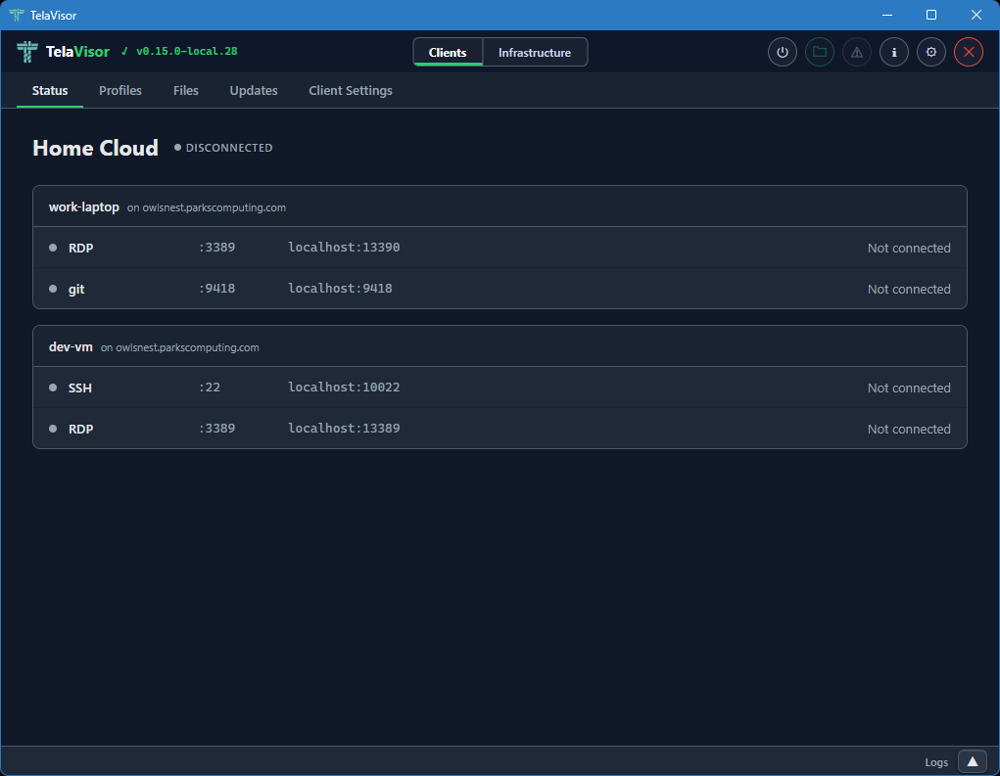
The power button in the title bar is grey when disconnected. Clicking it starts the connection. The button turns amber and pulses while the tunnel is being established, then turns solid green when the tunnel is up.
When the tunnel is up, the Status page changes shape. The "Disconnected" badge becomes a green "Connected" badge with the process identifier (PID) of the tela child process in parentheses, the power button turns green, and each service line updates to show its current state. A service that is bound and waiting for traffic reads "Listening." A service with an active session reads "Active" with the number of current connections. A service that failed to bind reads the bind error in red.

Each service indicator dot is grey when disconnected, green when listening
or active. The transitions between Listening and Active happen in real
time as you start and stop sessions against the local addresses from
outside TelaVisor. Open ssh user@localhost -p PORT (using the port shown
in the Status tab) against a Listening SSH service and the dot stays green;
the count next to "Active" goes up by one for the duration of the session
and back to "Listening" when the session ends.
The status updates arrive over a local WebSocket that the tela process
opens for TelaVisor to subscribe to. There is no polling. The values you
see on the Status page are pushed by tela the moment they change in the
tunnel.
To disconnect, click the power button in the title bar again, or quit TelaVisor. If you have Confirm disconnect enabled in Application Settings, TelaVisor asks for confirmation before tearing the tunnel down.
Profiles
The Profiles tab is where you build connection profiles. A connection
profile is a YAML file that names one or more hubs, the machines on those
hubs you want to reach, and the services on those machines you want to
expose locally. The same YAML file format is consumed by tela connect -profile from the command line; the desktop application and the command
line use profiles interchangeably.
The Profiles tab has a toolbar across the top with the controls for managing the profile collection. From left to right, the toolbar contains:
- Profile dropdown. Selects the active profile. Clicking the dropdown opens a list of every profile in your profile directory. Selecting one loads it into the editor below and makes it the active profile for the Status, Files, and Client Settings tabs as well.
- Undo. Reverts unsaved changes to the most recently saved state of the profile.
- Save. Writes the current selections to the profile YAML file. The button is enabled only when there are unsaved changes.
- New. Creates a new empty profile. Prompts for the profile name and creates an empty YAML file in the profile directory.
- Delete. Deletes the active profile, with confirmation.
- Import. Imports a profile YAML file from a path on disk. Useful for receiving a profile from another machine or another user.
- Export. Saves the active profile to a chosen path on disk. Useful for sharing a profile or backing it up.
Below the toolbar, the page is split into a left sidebar and a right panel. The left sidebar lists three things: a Profile Settings entry, the hubs you have credentials for, and a Preview entry. Each hub has a checkbox that toggles whether the hub is included in the profile. Hubs that are checked expand to show the machines registered with them. Each machine has a coloured dot indicating its current online state.
The right panel changes based on what you have selected in the sidebar.
Profile Settings
Selecting the Profile Settings row in the sidebar shows the profile-level configuration. This is the configuration that applies to the profile as a whole, not to any one machine.
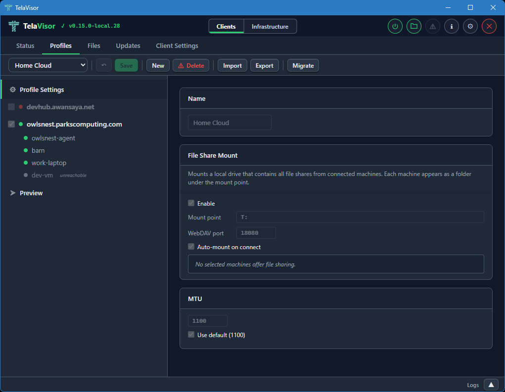
The Profile Settings panel contains:
- Name. The display name of the profile. The name is the file name of the YAML file (minus the extension) and is what appears in the profile dropdown.
- File Share Mount. The Web Distributed Authoring and Versioning
(WebDAV) mount configuration. An Enable checkbox turns the mount
on or off. The Mount point field sets the local path or drive letter
to mount onto. The Port field sets the local TCP port the WebDAV
server listens on. The Auto-mount on connect checkbox mounts the
share automatically when the profile connects. Below these controls,
a live preview lists every machine in the profile that has file
sharing enabled. Each listed machine will appear as a folder under
the mount point when the tunnel is connected. The mount feature is
the desktop equivalent of
tela mountfrom the command line. - MTU. The Maximum Transmission Unit override for the WireGuard interface. The default is 1100, which works on every network the project has tested against. The override is useful when a specific link path requires a smaller MTU to avoid fragmentation. The Use default checkbox uses the default value and disables the input box.
The Profile Settings panel is where you set up things that apply to the profile regardless of which machine you are connecting to.
Switching profiles
The profile dropdown in the toolbar shows every profile in your profile directory. Click the dropdown to open the list and select a profile to switch to.
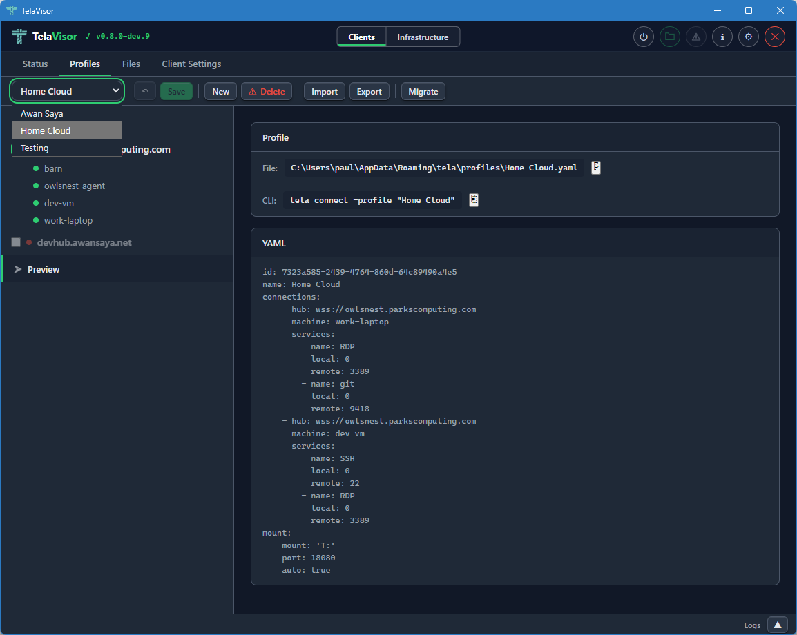
Switching profiles loads the selected profile into the editor and makes it the active profile across the rest of the application. The Status tab, the Files tab, the Client Settings tab, and the connection state all follow the active profile. If you switch profiles while connected, TelaVisor disconnects the current profile first (asking for confirmation if confirm-disconnect is enabled), then loads the new profile without automatically reconnecting. Click the power button in the title bar to connect with the new profile.
Hub view
Clicking a hub in the sidebar shows a summary card for that hub in the right panel.

The hub summary shows the hub name, the hub URL, and three statistics:
- Machines. The total number of machines registered with this hub.
- Online. The number of those machines that are currently online.
- Selected services. The number of services on this hub that are currently included in the profile.
The hub view is the place to get a quick read on whether the hub has the machines you expect. From here you can drill into a specific machine by clicking it in the sidebar.
Machine view
Clicking a machine in the sidebar shows the services that machine exposes through the hub.
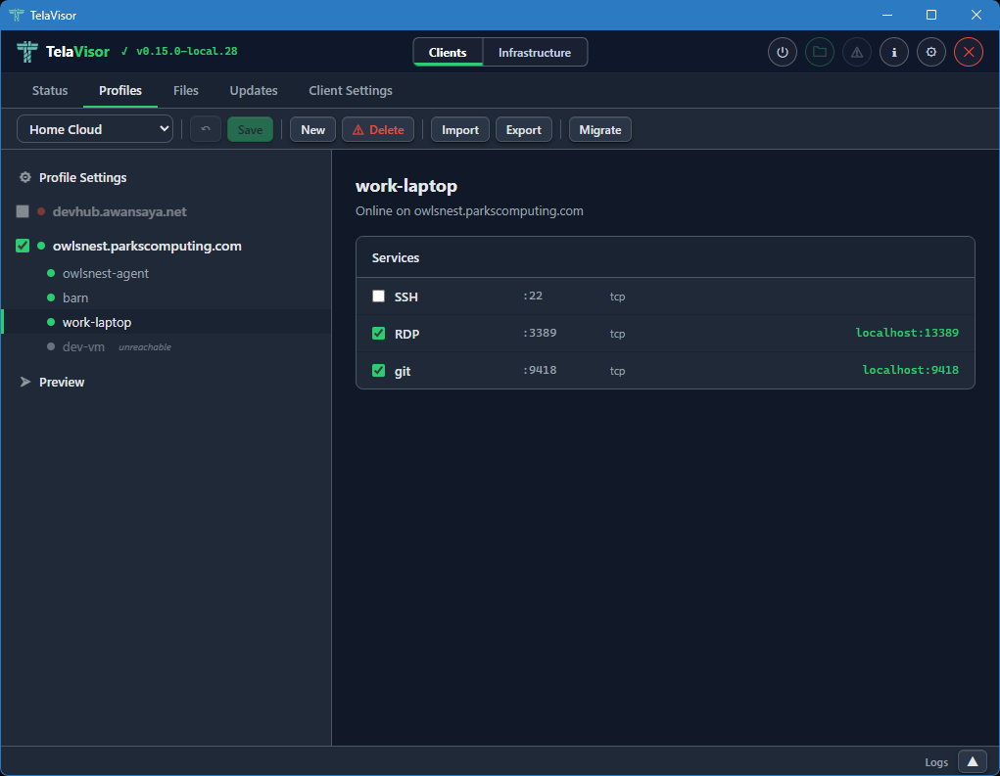
The machine view shows the machine name, the hub it is registered with, the machine's online status, and a list of every service the machine exposes. Each service has a checkbox that toggles whether the service is included in the profile. The columns show:
- Service name. Either the name the agent advertised (for example,
SSH,RDP,postgres) or, if the agent did not advertise a name, the port number. - Remote port. The port the service listens on inside the encrypted tunnel, on the agent side.
- Protocol. The transport protocol of the service (almost always
tcpbecause Tela is a TCP fabric). - Local address. The address and port the
telaprocess binds on127.0.0.1when the profile is connected. The first choice is the service's real port (for example,localhost:22for SSH). If that port is already in use, the client triesport+10000(localhost:10022), thenport+10001, and so on until a free port is found. The actual bound address and port are shown here once the profile is connected.
When the tunnel is connected, the hub and machine checkboxes are disabled. This prevents accidental profile changes during an active session. To edit the profile, disconnect first.
Preview
Clicking the Preview row in the sidebar shows the live YAML preview of the profile.

The preview displays the exact YAML that TelaVisor will write to the profile file when you click Save. The file path of the profile is shown in the header of the preview panel. The YAML preview is read-only inside TelaVisor; if you want to edit the profile by hand, open the file in a text editor and the changes will be reflected the next time TelaVisor loads it.
The preview is also the canonical answer to the question what command
line equivalent does this profile correspond to? The same YAML file
works with tela connect -profile <path> from a shell, so the preview
shows you exactly what is happening under the hood when you click
Connect.
Files
The Files tab is the built-in file browser. It uses the agent's file share protocol over the encrypted tunnel to list, upload, download, rename, move, and delete files on machines that have file sharing enabled. There is no Secure Shell (SSH), no Server Message Block (SMB), and no Web Distributed Authoring and Versioning (WebDAV) mount required; the file browser talks the file share protocol directly.
When the tunnel is down
When the tunnel is not connected, opening the Files tab shows the list of machines in the active profile, but the only state you can see is "disconnected."
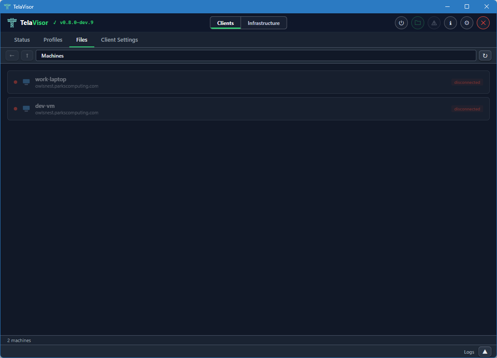
You cannot browse files until you connect the profile. The Files tab in this state is mostly informational: it tells you which machines are part of the active profile and that none of them are reachable yet.
When the tunnel is up
When the tunnel is connected, the Files tab shows each machine with its file share status: a coloured indicator dot, the machine name, the hub it is registered with, and badges describing the file share's policies.
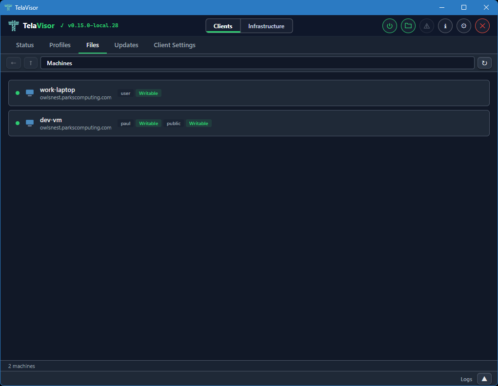
The badges include:
- Writable. The agent allows uploads and modifications.
- Delete. The agent allows file deletion.
- Max: the maximum file size the agent will accept on upload.
- Blocked: the file extensions the agent refuses to accept on upload.
These badges come from the agent's file share configuration and are read-only in this view. Editing them is done from the Agents tab in Infrastructure mode, on a machine where you have the manage permission.
Browsing files
Clicking a machine opens its file share in an Explorer-style browser.

The browser layout has four parts:
- Address bar. Back, up, and a path display showing the current directory. Each segment of the path is clickable to navigate to that ancestor directory.
- Action bar. Buttons for Upload, New Folder, Rename, Download, and Delete, plus a Hide dotfiles toggle on the right. Each action button is enabled or disabled based on the current selection and the file share's permissions. Upload and New Folder require the share to be writable. Delete requires the share to allow deletion.
- File list. A sortable table with columns for Name, Date modified, Type, and Size. Folders are listed first, then files, each group sorted alphabetically by default. Click a column header to sort by that column.
- Status bar. Shows the file count, folder count, total size of the current directory, and a read-write or read-only indicator for the share.
Selection follows standard desktop conventions:
- Click to select a single item.
- Ctrl+click to toggle individual items in a multi-selection.
- Shift+click to extend a range selection.
- Double-click a file to download it.
- Double-click a folder to enter it.
Drag and drop is supported on writable shares. Drag a file or folder onto a target folder to move it. If the dragged item is part of a multi-selection, all selected items move together. The target folder highlights with a dashed outline while the drag is over it.
The file list updates in real time. When files are created, modified, deleted, or renamed on the remote machine by any process, the changes appear in the file list automatically. This works because the agent watches the file share directory using the operating system's native file change notifications and pushes change events back through the tunnel to TelaVisor.
Updates
The Updates tab is the lifecycle surface for the Tela binaries
installed on this machine: TelaVisor itself, the tela CLI, and any
local telad or telahubd binaries the operator manages. Hub and
agent updates belong to the hub or the agent and are driven from the
Hubs and Agents tabs in Infrastructure mode; the Updates tab
does not touch them.

The tab header carries two controls in the top-right: a Check automatically checkbox and a Check Now button. The checkbox toggles the periodic background check (the same check that drives the topbar update indicator) and persists immediately to the credential store. Check Now fires the check on demand and re-scans the local binary directory. Two cards fill the page:
Release Channel names the channel TelaVisor and the tela CLI
follow on this machine. They share a single preference stored in
~/.tela/credentials.yaml under update.channel, so switching the
dropdown reconfigures both binaries at once. The dropdown lists the
built-in channels (dev, beta, stable) plus every custom
channel source the operator has added; custom channels are managed
in Client Settings, and the card footer links
there directly.

Installed Tools is a table with a row for TelaVisor and a row for each managed binary. Each row shows the installed version, the latest version on the configured channel, and an action button that is either absent (the binary is up to date), Install (the binary is not present), or Update (the binary is behind the channel HEAD). The TelaVisor row's button reads Update & Restart because TV has to hand execution off to the new binary after the swap.
When the same binary exists both as a local file and as an installed service (Windows SCM, systemd, launchd), a sub-row shows the service version and running state underneath the main row. The update action on the main row updates the local copy; updating a service-only installation uses a separate Update button labeled accordingly. After a service restarts against the new binary, the Installed column polls the on-disk version until it changes so the displayed value always reflects what is actually running.
The Available column comes from the release channel manifest, not
from GitHub's releases/latest. A TelaVisor on dev compares
against dev.json, a TelaVisor on stable against stable.json.
Every download is verified against the channel manifest's SHA-256
hash before being written to disk; a mismatch aborts the swap and
leaves the existing binary in place.
The whole page is also reachable as a modal via the warning-icon update indicator in the topbar; the indicator turns on when any monitored binary is behind its channel HEAD and off when every row is current. The indicator and the tab share state, so installing from either surface clears the other.
Client Settings
The Client Settings tab is where you configure how the tela process
runs on the local machine. It has its own toolbar at the top with Undo
and Save buttons. Both are enabled when there are pending changes.
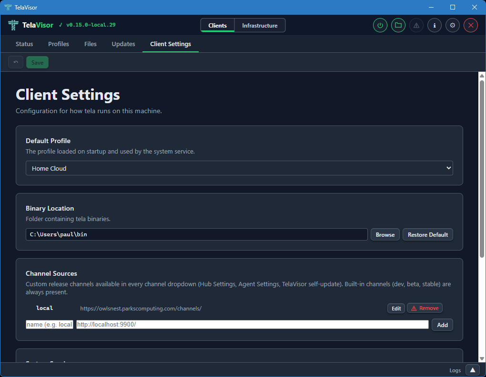
The tab contains four sections.
Default Profile
A dropdown that selects which profile loads when TelaVisor starts and is used by the system service when one is installed. The dropdown lists every profile in your profile directory.
Binary Location
The folder where TelaVisor looks for the managed binaries: tela,
telad, and telahubd. The default is the platform's standard local
application directory:
| Platform | Default location |
|---|---|
| Windows | %LOCALAPPDATA%\tela |
| Linux | ~/.local/share/tela |
| macOS | ~/Library/Application Support/tela |
Use the Browse button to choose a different folder, or Restore Default to reset.
The Binary Location is the directory where TelaVisor installs and
updates tools. The Updates tab reads from and writes
to this directory; the system service is configured against it too,
so all four roles (TelaVisor, the tela CLI, telad, telahubd)
read and write the same binaries from the same place.
Channel Sources
Custom release channels that should appear in every channel dropdown
in TelaVisor: the Updates tab, Hub Settings, and Agent Settings. The
three built-in channels (dev, beta, stable) are always present
and cannot be removed. Each custom entry is a name and a base URL
(for example, local pointing at http://localhost:9900/); the
name becomes selectable in every channel picker that lists it, and
the base is used to resolve manifest and binary URLs for that
channel. Custom channels are stored in ~/.tela/credentials.yaml
under update.sources.
System Service
Controls for installing the tela client as a system service. The
service runs the default profile as an always-on background tunnel that
starts with the operating system, so the tunnel is up before any user
logs in. This is useful for production deployments where the tunnel
needs to survive logouts and reboots.
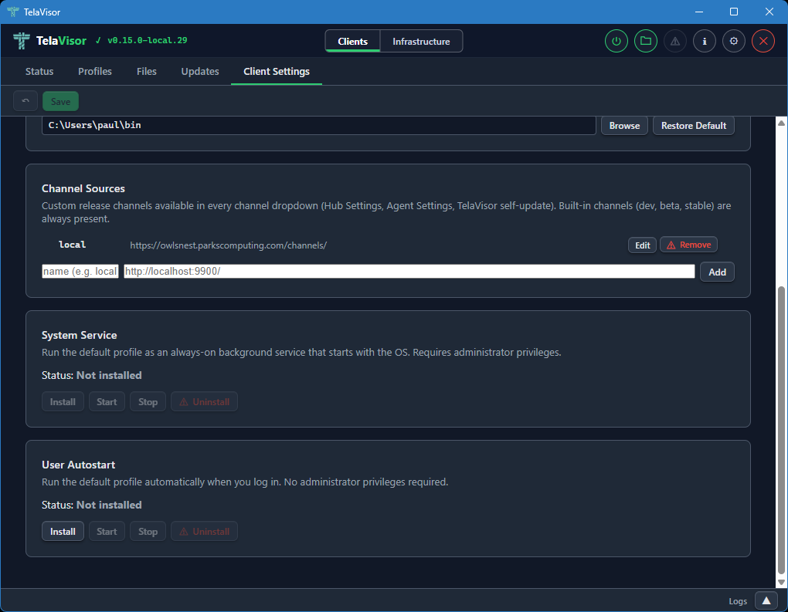
The Status field shows whether the service is currently Installed or
Not installed. Four buttons control the service: Install, Start,
Stop, and Uninstall. The buttons are enabled or disabled based on
the current state. Install asks for elevation (User Account Control on
Windows, sudo on Linux, an authentication prompt on macOS). The
service uses the platform-native service manager: Windows Service
Control Manager (SCM) on Windows, systemd on Linux, launchd on macOS.
User Autostart
Controls for running the tela client as a user-level autostart task
that launches when you log in, without requiring administrator
privileges. Unlike the System Service, User Autostart runs in your
login session, which means it starts only after you log in and stops
when you log out. It is suited to personal machines where you want
the tunnel up for your own use but do not need it active before login
or for other users.
The Status field shows whether autostart is currently Installed or Not installed. Three buttons control it: Install, Start, and Stop. Install does not require elevation. On Windows, TelaVisor registers a Scheduled Task that triggers at login. On Linux, it writes a systemd user unit. On macOS, it installs a LaunchAgent.
Infrastructure mode
Switching the mode toggle in the title bar to Infrastructure changes the tab bar to the five administration tabs: Hubs, Agents, Access, Remotes, and Credentials. Infrastructure mode is for operators. None of the features in this mode are required for a user who only wants to make a connection. All of them become important the moment you start running hubs or agents on behalf of yourself or others.
Hubs
The Hubs tab is where you administer any hub you have credentials for: viewing settings, managing machines, viewing connection history, and updating or restarting the hub binary. Identity and per-machine access management live in a peer tab of their own, Access; the Hubs tab no longer carries a Tokens or Access sub-view.
The tab is laid out with a sidebar on the left containing a hub picker dropdown, a navigation list of views, and an Add Hub button at the bottom. The right panel shows the currently selected view for the currently selected hub.
Hub picker
The hub picker at the top of the sidebar lists every hub you have credentials for. Clicking it opens a dropdown of hub URLs.
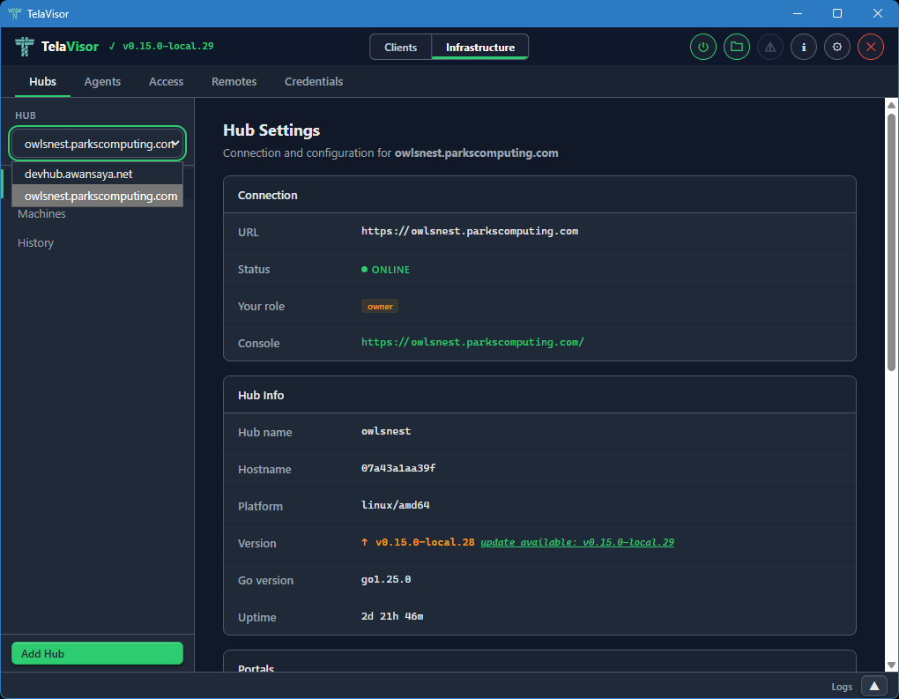
Selecting a hub from the dropdown loads its data into the views below. All three views (Hub Settings, Machines, History) are scoped to the currently selected hub. Identity and access management have their own peer tab; see Access.
If you do not have credentials for any hub yet, the dropdown is empty and the Add Hub button at the bottom of the sidebar is the only way forward. Add Hub opens a dialog where you can paste a hub URL and either a token or a one-time pairing code.
Hub Settings
The Hub Settings view shows everything about the hub itself: connection details, hub metadata, portal registrations, lifecycle controls, and destructive actions.
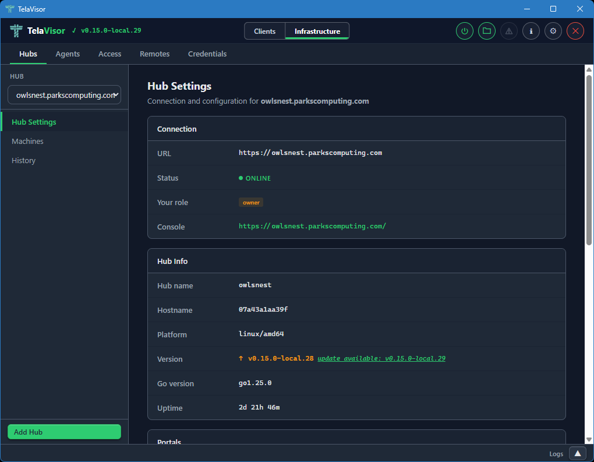
The Connection section at the top shows:
- URL. The hub's connection URL, beginning with
wss://for WebSocket Secure orws://for plain WebSocket. - Status. The hub's online state.
- Your role. The role of the token you authenticated with: owner, admin, user, or viewer. This determines which actions in the rest of the page you are allowed to take.
- Console. A clickable link to the hub's web console (the browser-based admin interface that the hub serves on its own URL).
Below Connection, the Hub Info section shows metadata reported by the
hub at /api/status:
- Hub name. The hub's configured name.
- Hostname. The hostname of the machine the hub is running on.
- Platform. The operating system and architecture (
linux/amd64,windows/amd64, etc.). - Version. The release version of the hub binary, with a coloured
badge showing whether it is current or behind the channel manifest.
Green with
(latest: vX.Y.Z)when current, amber withupdate available: vX.Y.Zwhen behind. The "available" version comes from the hub's own release channel manifest, so a hub running on thedevchannel is compared againstdev.json, a hub onstableagainststable.json. - Go version. The Go runtime version the hub binary was compiled with.
- Uptime. How long the hub process has been running since its last start.
Below Hub Info, the Portals section lists hub directories the hub is
registered with. Each entry shows the directory name and the directory
URL. Adding a portal here is the equivalent of running telahubd portal add from the command line.
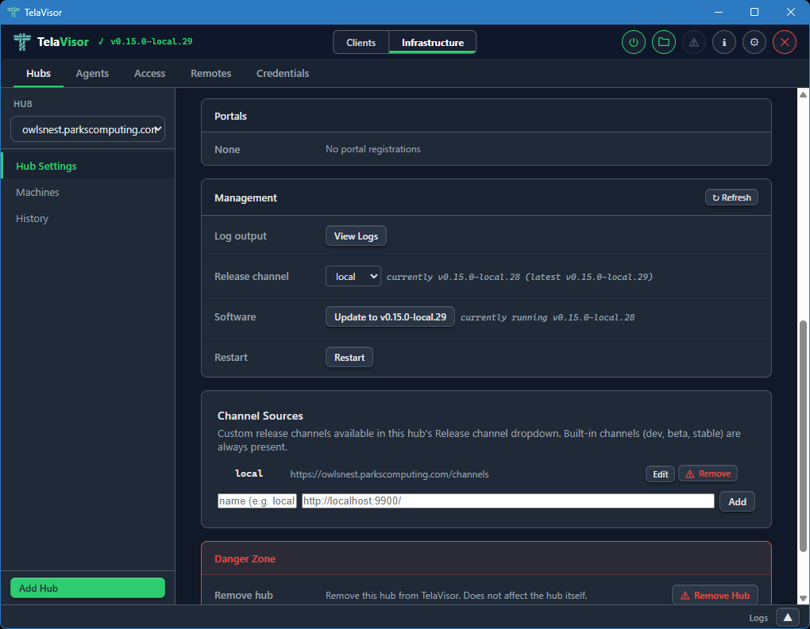
The Management section provides hub lifecycle controls. These are only visible to owners and admins:
-
Log output. A View Logs button that opens a new tab in the log panel streaming the hub's recent log buffer through the
/api/admin/logsendpoint. -
Release channel. A dropdown showing the hub's currently configured release channel (
dev,beta, orstable) with a status string showing the current and latest versions on that channel. Changing the dropdown opens a confirmation dialog and, on confirm, sendsPATCH /api/admin/updateto the hub to switch its channel persistently. The Software button below updates immediately to reflect the new channel's HEAD. If the hub is too old to support channels (returns HTTP 405 for the new endpoint), the row hides itself and the Software button showspre-channel build (update first via legacy path). -
Software. Shows whether the hub is up to date or behind the channel's HEAD. The button label reads either
Up to date(disabled) orUpdate to vX.Y.Z(active). Clicking the active button opens a confirmation dialog before proceeding.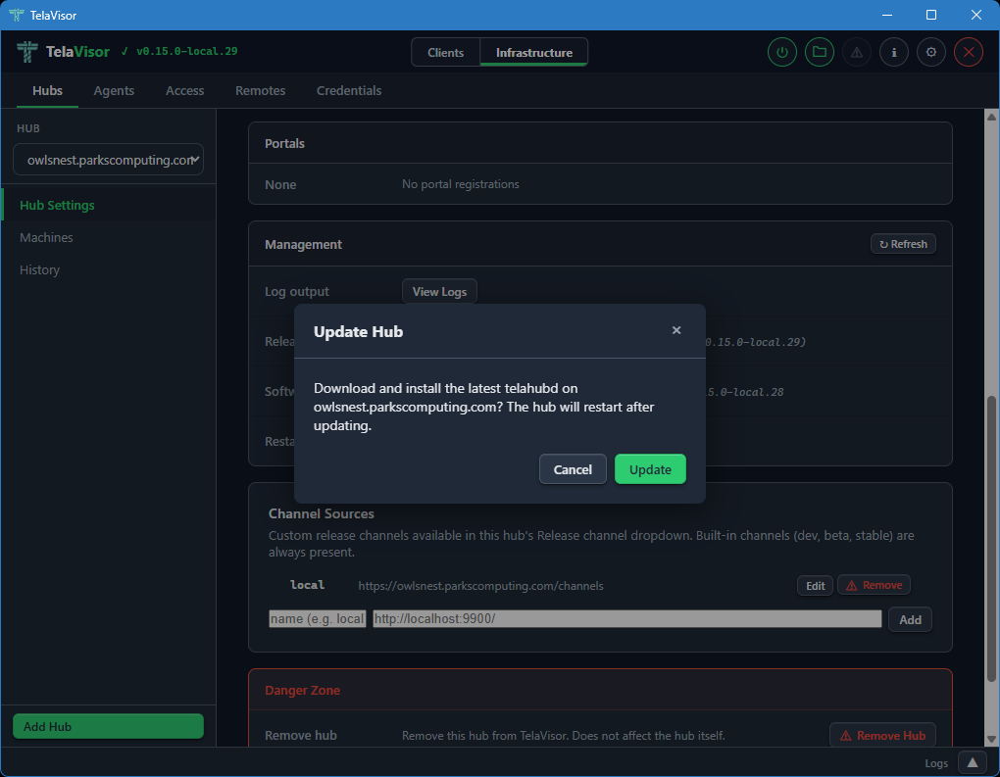
The hub then downloads the new release, verifies it against the channel manifest's SHA-256 hash, replaces its binary, and restarts. Progress is shown inline (
Hub is downloading update and restarting...,Waiting for hub to restart... (1),Updated to vX.Y.Z) and the page re-renders when the hub comes back online. The label and disabled state are derived from the channel manifest, not from the GitHub/releases/latestAPI, so a hub ondevcannot be told to "update to v0.5.0" (thestableHEAD). -
Restart. Requests an immediate graceful restart of the hub process.
The Danger Zone at the bottom of the page provides destructive actions: removing the hub from TelaVisor's local list (which does not affect the hub itself, only your local credentials and view) and clearing all stored hub tokens from the local credential file.
The Hub Settings view is the same shape regardless of which hub you have selected. The values change with the hub; the layout does not.
Machines
The Machines view lists all machines registered on the selected hub with their online status, last-seen timestamp, advertised services, and active session count.
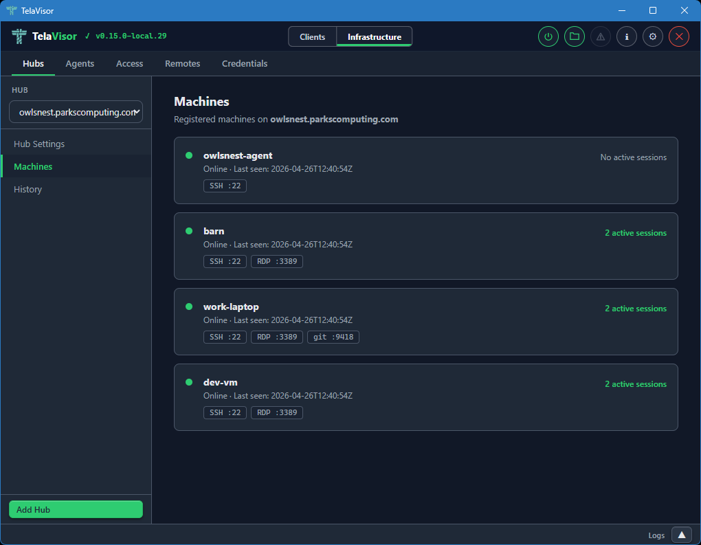
Each machine row shows:
- Online indicator. A coloured dot, green for online, grey for offline.
- Machine name. The name the agent registered with.
- Last seen timestamp. Either the most recent contact time for an online machine, or the last time the machine was seen for an offline machine, in ISO 8601 Coordinated Universal Time (UTC) format.
- Service badges. A pill for each service the machine advertises,
showing the service name and the remote port (for example,
SSH :22,RDP :3389). - Active session count. The number of active client sessions on this machine, on the right side of the row.
The Machines view is read-only. To edit a machine's configuration, find the agent in the Agents tab and use the agent detail panel. To remove a machine from a hub, use the Danger Zone in the agent detail.
Identity and per-machine access management used to live in separate Access and Tokens sub-views on this tab; both are now folded into the top-level Access peer tab, which is the canonical place to answer who can do what to which machine on this hub.
History
The History view shows recent session events on the selected hub: agent registrations, client connections, client disconnections, agent disconnections.
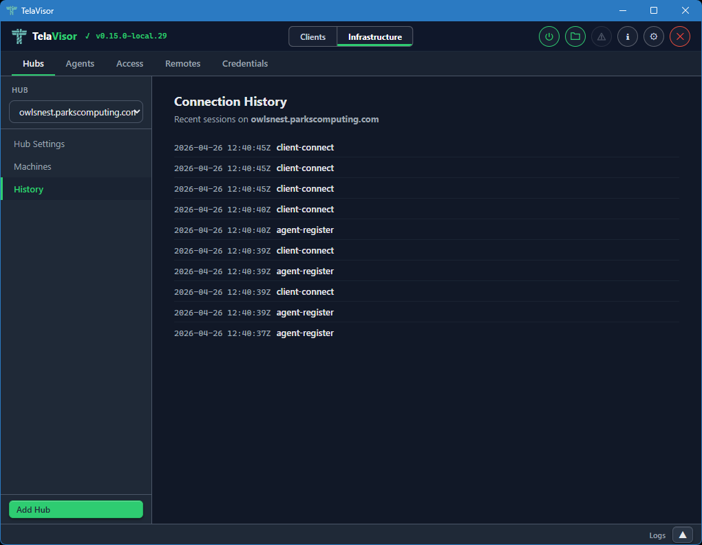
Each row shows:
- Timestamp. The event time in ISO 8601 UTC.
- Event type.
agent-register,agent-disconnect,client-connect,client-disconnect. - Identity. The identity that triggered the event, when known.
- Machine. The machine the event applies to, when relevant.
The history is held in a fixed-size ring buffer in the hub. Older events are evicted as new ones arrive. The buffer survives within a single hub process and is reset when the hub restarts. Persistent audit log shipping is planned under the Audit log retention item in ROADMAP-1.0.md.
Agents
The Agents tab manages every agent (telad instance) visible across all
the hubs you have credentials for, without requiring an active tunnel
connection. The agents are listed by querying each hub's machines
endpoint and merging the results into a single fleet view. You can
manage an agent on a hub on the other side of the world without first
opening a tunnel to one of its services.
The tab is laid out with a sidebar on the left listing every visible agent and a detail panel on the right. A toolbar above the detail panel contains Undo, Save, Restart, and Logs buttons that act on the currently selected agent. Undo and Save are enabled when there are unsaved changes. Restart and Logs are always enabled when an agent is selected.
Agent list
When no agent is selected, the right panel is empty with a prompt to select one.
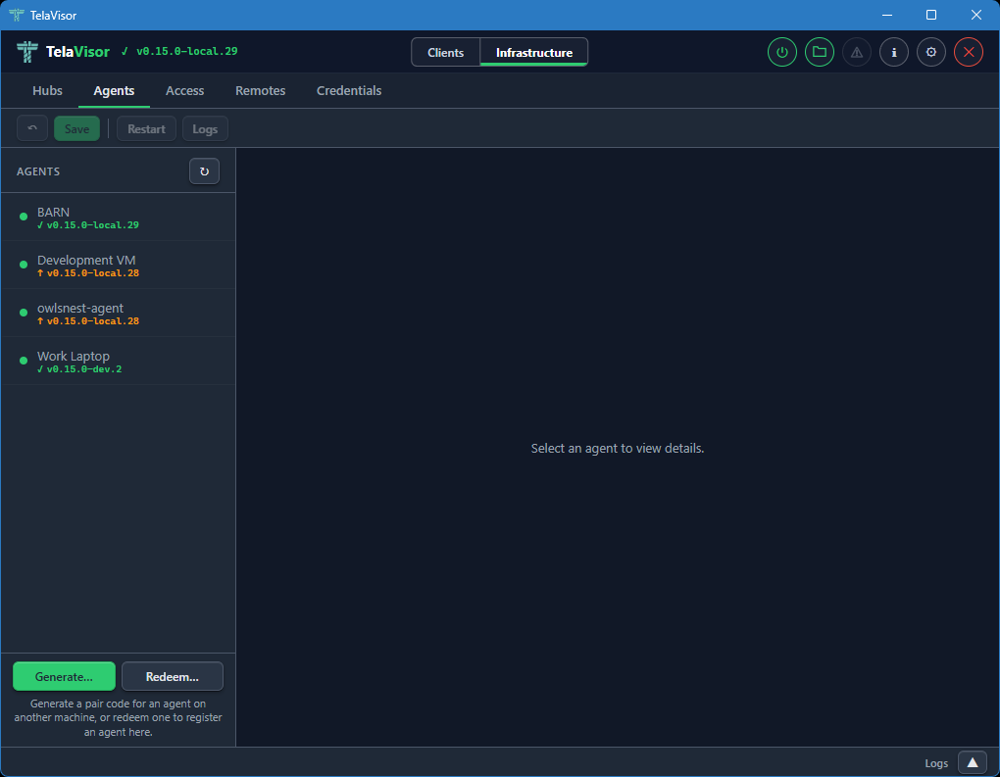
Each entry in the agent sidebar shows:
- Online indicator. A coloured dot.
- Agent name. The name the agent registered as.
- Agent version. The release version of the agent binary, displayed as a small caption.
Two buttons sit in the sidebar footer for agent onboarding. They are single-purpose so the labels match what each one actually does.
Generate... opens a modal that asks for a hub, a machine name,
and an expiration. Submitting it produces a one-time pair code on
the chosen hub with type=register. The result modal shows the code
in large monospace next to a pre-filled
telad pair -hub <ws-url> -code <code> -machine <name> command line,
each with its own Copy button. The intended workflow is to paste the
command into chat, SSH, or a deployment script targeted at the agent
host. Generation is enabled whenever TelaVisor knows about at least
one hub; the call requires owner or admin credentials on that hub.
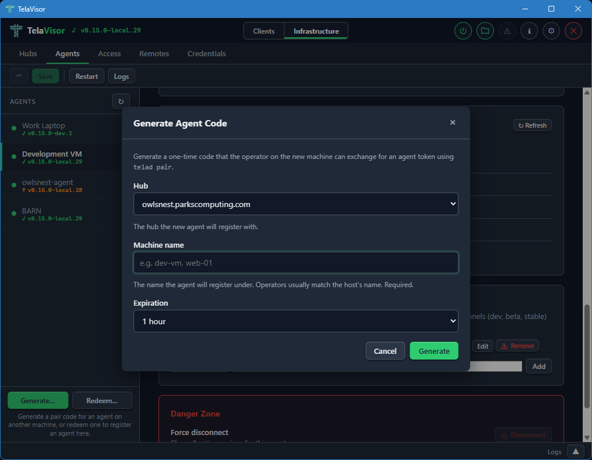
Redeem... opens a modal that runs telad pair against the local
telad binary on this machine. Use it when an operator on this same
workstation wants to register an agent here (developer workstations,
single-host setups). The form takes a hub, the pair code, and an
optional machine name. The hub picker lists the hubs TelaVisor
already knows about plus an Other hub URL... option for codes
issued by hubs you have not added yet. On success, a confirmation
modal names the hub and machine, and the agents list refreshes a
moment later so the new entry appears.

When telad is not installed in the configured Binary Location, the
Redeem modal opens in a short bail-out state explaining that
pairing requires a local telad binary, with an Open Updates...
button that flips to Clients mode and routes to the Updates tab
where the binary can be installed. The bail-out also calls out a
common confusion: a pair code for an agent on a different machine
cannot be redeemed in TelaVisor at all because the resulting token
has to land in the agent host's credential store; in that case the
operator runs telad pair directly on the target host, which is the
flow Generate... is built for.
Agent detail
Selecting an agent in the sidebar shows the agent detail panel on the right.
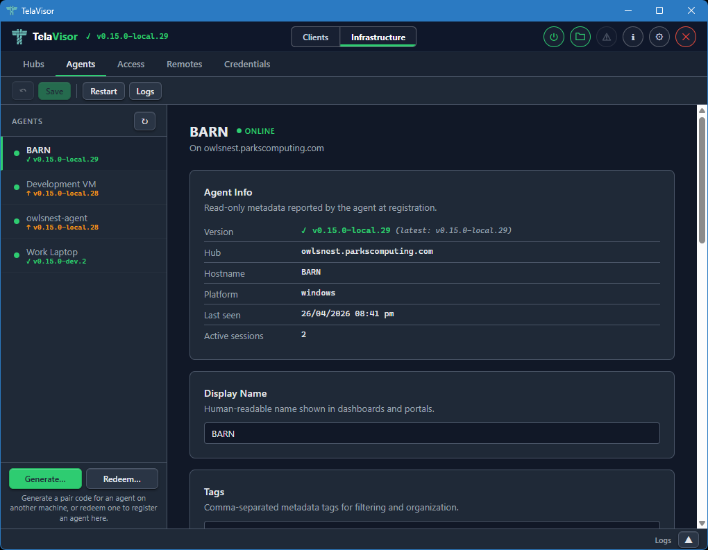
The detail panel is divided into cards, each covering one aspect of the agent.
Agent Info is a read-only card showing metadata reported by the agent at registration:
- Version. The release version with an up-to-date badge.
- Hub. The hub the agent is registered with.
- Hostname. The hostname of the machine the agent is running on.
- Platform. The operating system and architecture.
- Last seen. The last contact timestamp.
- Active sessions. The number of active client sessions on this machine right now.
Display Name is an editable field for a human-readable name shown in dashboards and portals. Defaults to the registered machine name.
Tags is an editable field for comma-separated metadata tags. Useful for filtering large fleets by environment, region, customer, or any other dimension that matters to your operation.
Location, Services, and File Share
Scrolling further down the agent detail panel reveals the operational configuration cards.

Location is an editable free-text field describing the physical or logical location of the machine. Used for documentation and dashboard display. Tela does not interpret it.
Services lists the ports and protocols the agent exposes through
the tunnel. Each row shows the service name, the remote port, and the
protocol. The list is read-only here because changing the advertised
services requires editing the agent's telad.yaml file directly. To
add or remove a service, use the agent's local configuration file or
push a new configuration through the management protocol.
File Share is the editable agent file share configuration. The card contains:
- Enabled. A checkbox that turns the file share on or off.
- Writable. A checkbox that controls whether uploads are allowed.
- Allow delete. A checkbox that controls whether deletion is allowed.
- Max file size. A field that sets the largest file the agent will accept on upload, in megabytes.
- Blocked extensions. A comma-separated list of file extensions the agent will refuse to accept on upload, regardless of the writable setting. Useful for blocking executables and scripts.
Editable fields in any card are pushed to the agent through the
hub-mediated management protocol when you click Save. The agent
validates the new configuration and persists it to its telad.yaml
file. Changes that pass validation take effect immediately. Changes
that fail validation are rejected with an error message.
The manage permission is required to edit any of these fields. Owner and admin roles have it implicitly. User-role tokens need an explicit manage grant on the relevant machine, issued through the Access tab.
Management and Danger Zone
Scrolling to the bottom of the agent detail panel reveals the Management card and the Danger Zone.
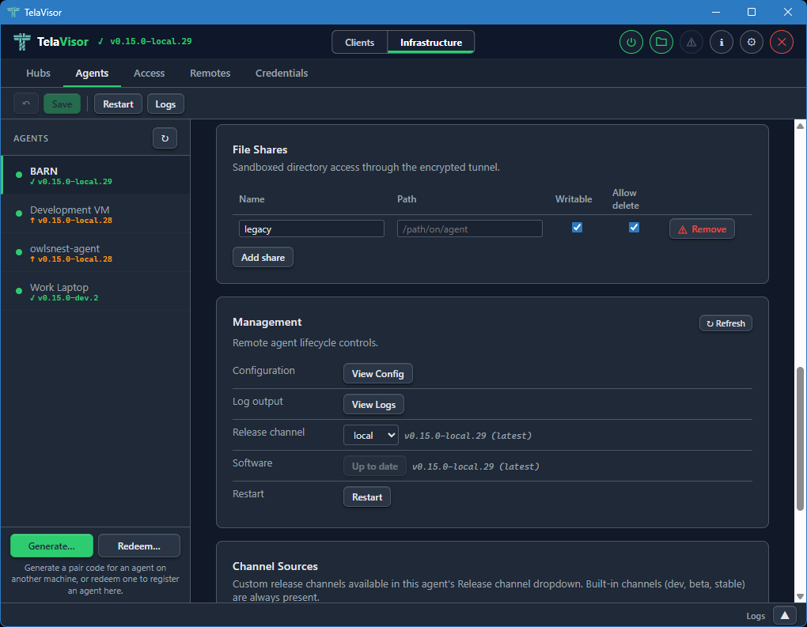
The Management card mirrors the layout of the hub Management card from Hub Settings:
-
Configuration. A View Config button that opens the agent's running configuration in a dialog. The configuration is fetched live through the management protocol so it reflects what the agent is actually using right now, not what is on disk in
telad.yaml.
-
Log output. A View Logs button that opens a new tab in the log panel and fetches the agent's recent log buffer through the
update-statusmgmt action via the hub's mediated management proxy. -
Release channel. A dropdown showing the agent's currently configured release channel with a status string showing current and latest versions on that channel. Changing the dropdown opens a confirmation dialog and, on confirm, sends the
update-channelmgmt action through the hub-mediated proxy to switch the agent's channel persistently. Pre-channel agents (olderteladversions that do not recognize the action) hide the row and showpre-channel build (update first via legacy path)next to the Software button. -
Software. Shows whether the agent is up to date or behind the channel's HEAD. The label, title, and disabled state are derived from the channel manifest via the agent's
update-statusmgmt action, so an agent ondevis never offered astablebuild. Clicking Update opens a confirmation dialog before proceeding.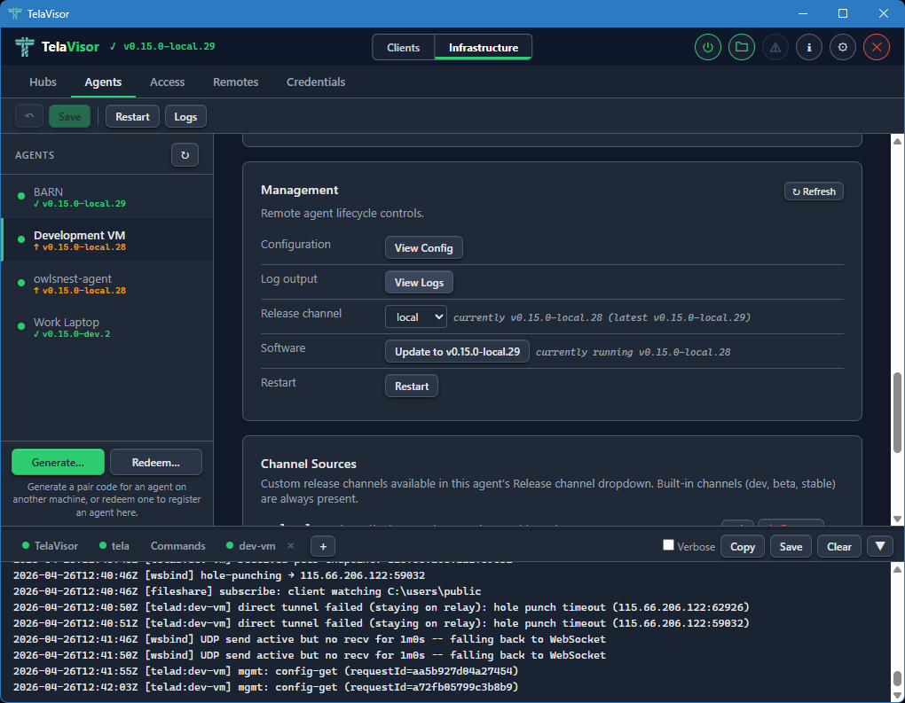
The dialog names the machine and confirms that the agent will restart after the update. Clicking Update in the dialog sends the
updatemgmt action through the hub-mediated proxy. The agent downloads the new release, verifies it against the channel manifest's SHA-256, and atomically swaps its binary.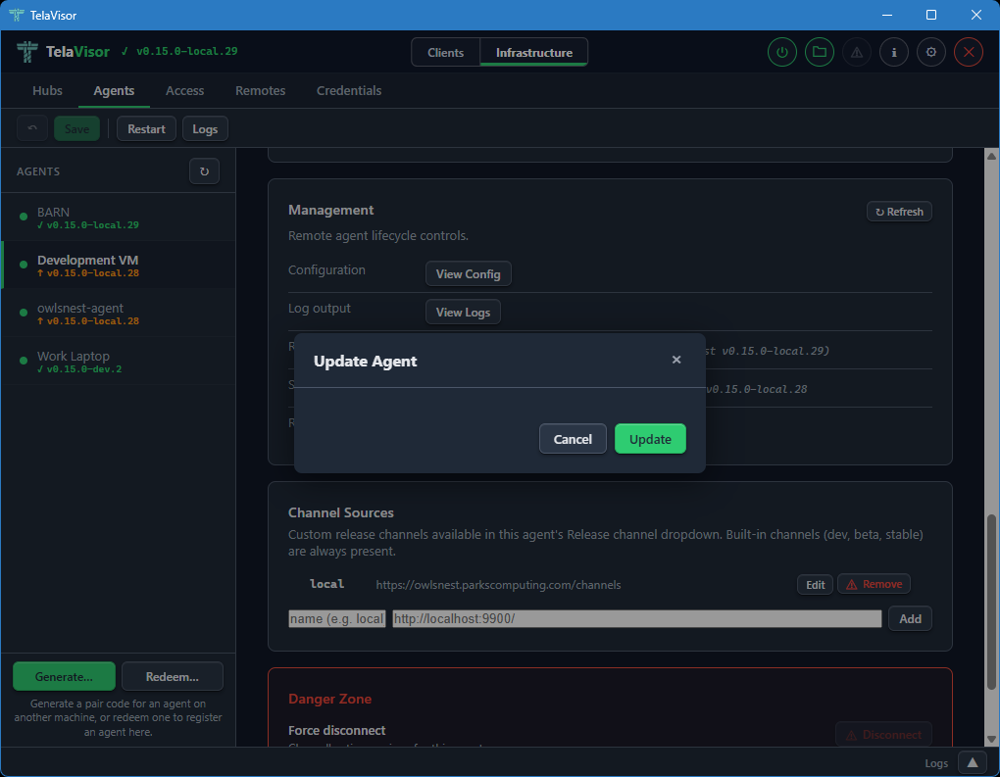
While the update is in progress the Software row shows a progress indicator. The rest of the management panel remains visible. If the agent is running under a service manager (Windows SCM, systemd, launchd) it exits cleanly and the manager restarts it against the new binary. If the agent is running standalone it relaunches itself.
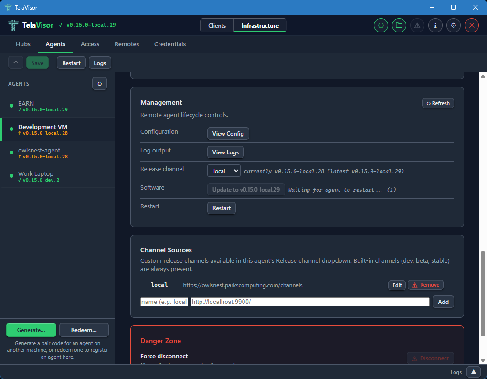
Once the agent reconnects, the Software row reflects the new version. The channel and version information updates automatically as the agent re-reports its state through the management protocol.
-
Restart. Requests a graceful restart of the agent process.
The Danger Zone at the bottom of the agent detail panel provides two destructive actions:
- Force Disconnect. Drops the agent's current connection to the hub. The agent's reconnect logic will attempt to re-establish the connection within seconds. Useful for forcing the agent to pick up a new configuration that requires a reconnection.
- Remove Machine. Removes the machine from the hub entirely, invalidating its registration. The agent will need to re-register on its next connection. This is the action to take when retiring a machine.
When telad runs as an operating system service (Windows SCM, systemd,
launchd) the same Update and Restart actions work because telad
detects that it is running under a process manager and exits cleanly,
letting the manager restart the binary. This avoids leaving orphan
processes from a self-spawned restart.
Access
The Access tab is the consolidated home for identity and per-machine access management. Every operator task that involves "who can do what to which machine" lives here: creating and deleting identities, rotating tokens, changing roles, granting and revoking per-machine permissions, narrowing a grant to a specific set of services, and generating one-time pairing codes.
The tab replaces two older Hubs sub-views: the Access panel that listed identities as cards, and the Tokens panel that managed authentication tokens as a table. Both are gone; this tab is the single place to go.
Two views of the same data
Access opens on one of two projections of the same underlying data:
-
By machine. The sidebar lists every machine the selected hub has registered, plus a wildcard
*entry for the cross-machine fallback ACL. The detail pane shows an identity-vs-permission matrix for the selected machine: every identity on the hub gets a row, with Connect, Register, and Manage checkboxes and an optional services filter.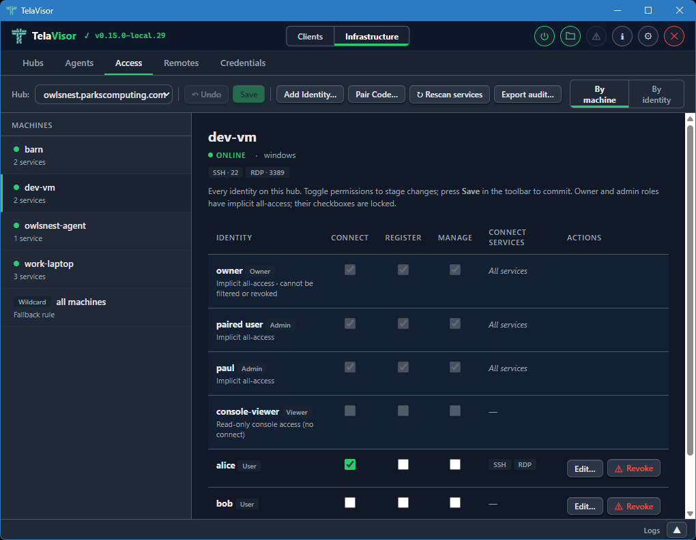
-
By identity. The sidebar lists every identity on the hub. The detail pane shows a machine-vs-permission matrix for the selected identity, with a row for every registered machine plus the wildcard
*fallback.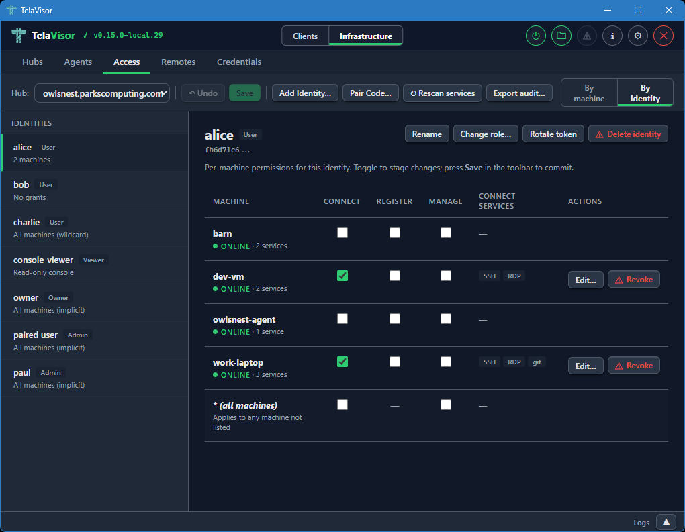
The view toggle is in the right side of the toolbar. Switching between the two views does not lose staged work; both views read and write the same pending-change set, so a permission checkbox ticked in By machine is the same edit visible in By identity.
The selected view is persisted to TelaVisor's settings, so reopening the tab returns to whichever view the operator last used.
The toolbar
The toolbar across the top of the tab holds the Hub selector and every action that operates on the current hub:
-
Hub. A dropdown of every hub the operator has credentials for. Switching hubs discards any pending changes on the previous hub (after a confirmation).
-
Undo. Drops every pending change in one go. Enabled only when there is pending work.
-
Save. Commits every pending change in parallel. Enabled only when there is pending work. See Save and conflicts below.
-
Add Identity... Creates a new token-backed identity. Opens a dialog asking for a name and a role; the new token is shown once in a follow-up dialog so the operator can copy it.

-
Pair Code... Generates a one-time pairing code for onboarding a new identity or agent.
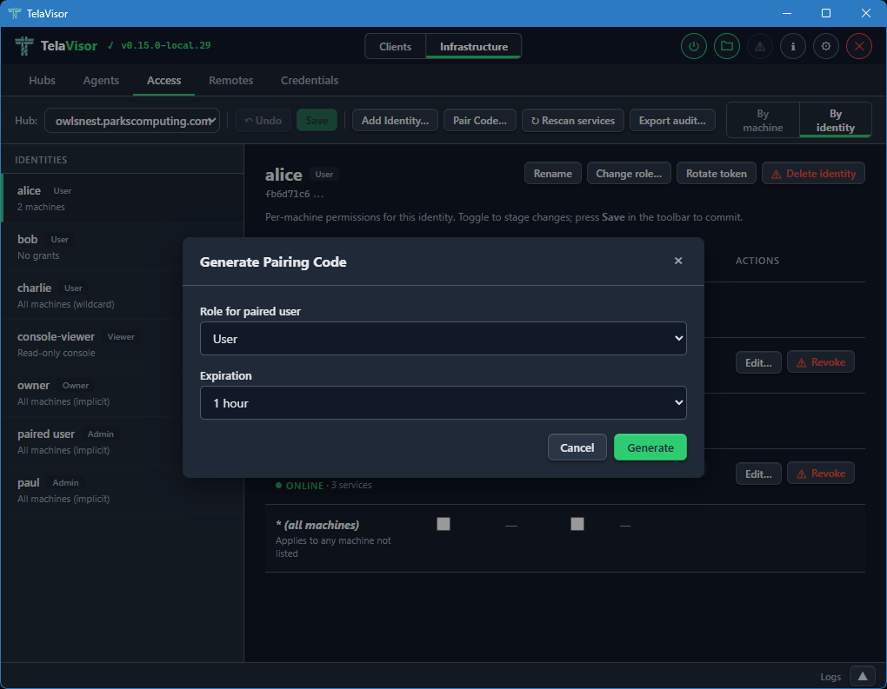
-
Rescan services. Reloads access data and machine services from the hub. Use after changing an agent's
telad.yamlso newly advertised services show up in the matrix. -
Export audit... Downloads a JSON snapshot of the hub's access state: every identity, their grants, the machines they apply to, and the services each grant allows. Useful for compliance and for diffing access state over time.
The matrix
The matrix is the main working area. Rows are identities (in By machine) or machines (in By identity); columns are the three permission flags and a Connect services column.
Implicit-role rows (owner, admin, viewer) render at full visual weight with locked checkboxes. An owner or admin row has every permission ticked because the role confers implicit all-access; the locked state makes it clear this is a property of the role, not a per-machine grant. A viewer row has all checkboxes unticked because viewer is read-only console access with no session privileges. These rows do not have Revoke actions, because the role is the source of truth; changing it goes through Change role... on the By identity detail header.
Explicit (user-role) rows are interactive. Ticking a checkbox stages a grant; unticking one stages its removal. A per-row Revoke button stages the removal of every permission for that identity on that machine in one click; once staged, the row shows the pending revoke with a strikethrough and a red left border, and the Revoke button flips to Undo so the operator can back out.
Every staged change is marked in two ways: the affected row picks up an amber left border and a pending label next to its name, and the sidebar item for that row's machine (or identity) picks up the same pending indicator. Save and Undo in the toolbar are both enabled whenever the pending set is non-empty.
The Connect services column
The Connect services column shows which services the identity can
reach on the machine when the Connect permission is granted. An
unfiltered grant reads All services in muted italics. A filtered
grant renders the first three service chips inline; longer filters
collapse the remainder into a +N more link that opens a small
read-only popover listing every service in the filter. The popover
never edits; it dismisses on outside click, Escape, scroll inside
the detail pane, or a re-click on the trigger. Edit and view paths
are kept separate by design so an operator scanning a filter for a
specific service cannot wander into the edit flow by mistake.
When the row's connect permission is inherited from the wildcard
* ACL (the hub cascades connect and manage from the wildcard
entry to every machine that has no explicit grant), the cell shows
a via * marker followed by the wildcard's services. The connect
checkbox in that case is checked and disabled with a tooltip that
points the operator at the wildcard row in the rail; per-machine
overrides are not possible because the underlying ACL model has no
deny semantic.

The per-row Edit... button opens a dialog to narrow or widen the filter. The dialog offers two scopes:
- Allow all services. Removes any filter. The identity can reach every service the agent advertises.
- Restrict to specific services. For a specific machine, shows a
checkbox list of the services the machine advertises, pre-ticked
to match the current filter. For the wildcard
*machine, shows a free-text comma-separated input because there is no concrete service list to enumerate.
Applying a restricted filter stages the change; Save commits it. Per-service access control is a v0.15 feature; on older hubs the dialog opens in a disabled state with a note explaining that the hub must be upgraded before the filter can be used.
Save and conflicts
Save fires one write per staged change, in parallel. Each write
carries the target identity's version as an If-Match precondition,
which the hub checks before applying the change. If another operator
modified any of those identities between load and save, the affected
writes return 412 Precondition Failed and a conflict dialog opens
listing the rows that drifted.
The dialog offers three recovery paths:
- Reload. Discards pending changes and reloads the server state. Re-apply the changes you still want; this time the writes will carry fresh versions.
- Discard my changes. Drops the pending batch and closes the dialog without reloading. Use when you realize the batch is no longer what you want.
- Force overwrite instead. A muted link in the dialog body that
retries the conflicting writes with no
If-Match, overwriting the other operator's edits on those rows. A second confirmation is required because this is destructive.
Writes that did not conflict are already committed by the time the dialog opens; only the conflicting rows are still pending.
The By identity detail header
When a user-role identity is selected in By identity, the detail header has an action cluster for identity-level operations:
- Rename. Renames the identity. The token is unchanged; only the human-readable label moves.
- Change role... Opens a role picker with User, Admin, Viewer, and Owner. Selecting Owner prompts a second confirmation because owner confers full control of the hub, including the power to demote or delete any other admin. A last-owner guard on the hub refuses to demote the only owner identity, so an operator who selects a different role for the sole owner sees an error in the modal; the recovery is to promote a peer to owner first, then try again.
- Rotate token. Issues a new token for the identity and shows it once. The previous token stops working immediately.
- Delete identity. Removes the identity and scrubs every ACL entry that referenced its token. Owner identities cannot be deleted.
For owner, admin, and viewer rows, the detail pane shows an explanatory card instead of a matrix. Owner and admin have implicit all-machine access that is not manageable per-machine; viewer is read-only console access with no machine permissions at all.

Remotes
The Remotes tab manages hub directory endpoints for short name
resolution. This is the desktop equivalent of the tela remote family
of CLI commands. Each remote maps a name to a directory URL that
provides hub discovery via /.well-known/tela and /api/hubs.
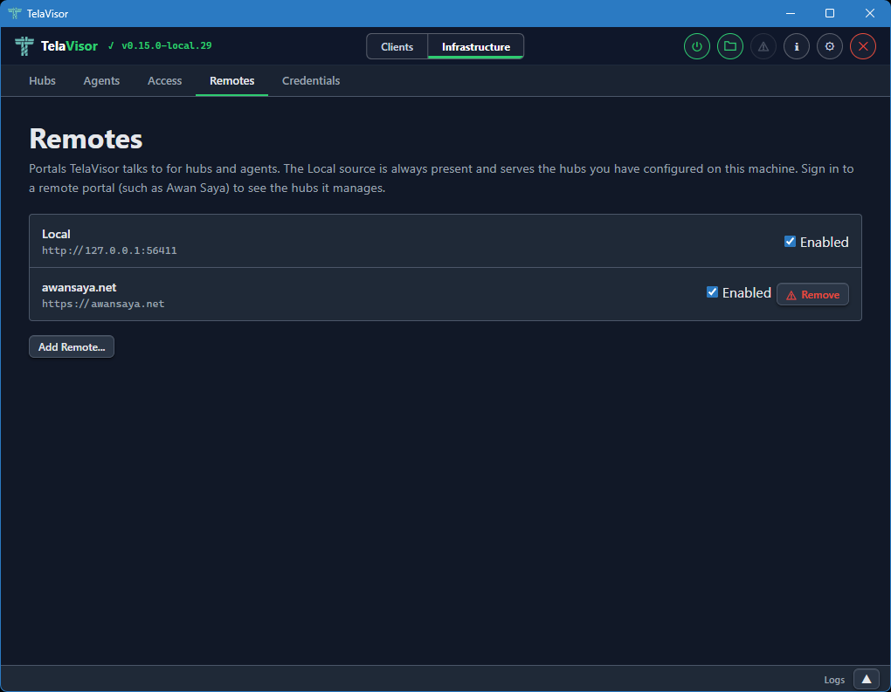
The view shows a table of registered remotes with two columns:
- Name. The short name you assigned to the remote. This is the
name the
telacommand line and TelaVisor use to look up hub URLs. - URL. The directory's base URL.
A Remove button on each row removes the remote, with confirmation.
Below the table, an input row with Name, Portal URL, and Add fields lets you register a new remote. The Name field is the short name you want to use; the Portal URL field is the base URL of the directory.
Once a remote is registered, you can use short hub names like
tela connect -hub work and the client resolves work through the
remote into a full hub URL. See the
Hub directories and portals chapter for the directory
protocol itself.
Credentials
The Credentials tab shows every hub token stored in your local
credential file. This is the desktop equivalent of tela login and
tela logout.

The view shows a table of credential entries with two columns:
- Hub. The hub URL the credentials are stored under.
- Identity. The identity name on that hub. May be empty for legacy entries that were stored before identity tracking was added.
Each row has a Remove button to delete that entry from the credential file. A Clear All button at the bottom removes every stored credential. Both actions ask for confirmation.
Removing a credential entry does not invalidate the token on the hub. It only removes the local copy. To revoke a token on the hub, use the Access tab and either delete the identity or rotate its token.
The credentials file is stored at:
| Platform | Path |
|---|---|
| Windows | %APPDATA%\tela\credentials.yaml |
| Linux | ~/.tela/credentials.yaml |
| macOS | ~/.tela/credentials.yaml |
The file is created with 0600 permissions (owner read-write only) on
Unix systems and the equivalent restrictive Access Control List (ACL)
on Windows. The same file is shared with the tela CLI, so credentials
added through TelaVisor are visible to tela and vice versa.
Log panel
The log panel is a persistent area at the bottom of the window that provides tabbed log output visible across both modes. You can resize it by dragging its top edge, or collapse it to a slim bar showing only a Logs label and an expand chevron.
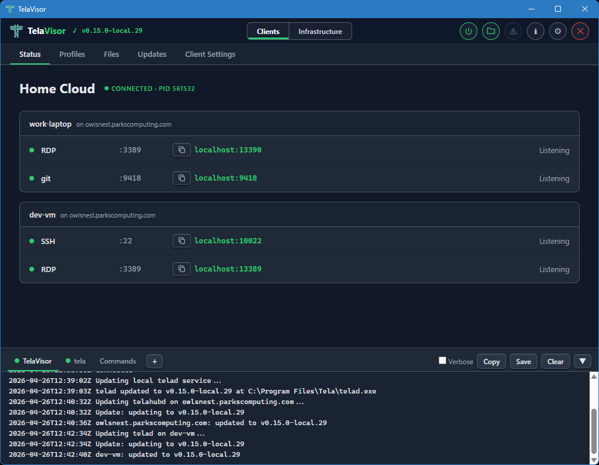
The panel auto-scrolls to the bottom as new lines arrive. If you scroll up to read history, auto-scroll pauses until you scroll back to the bottom. Each pane is limited to a configurable maximum number of lines (default 5000, configurable in Application Settings).
Built-in tabs
Three tabs are always present.
- TelaVisor. Application events: startup, profile loading, connection state changes, errors. This is the place to look first when something in TelaVisor itself is misbehaving.
- tela. Live output from the
telachild process. The same output you would see if you rantela connect -profile <path>in a terminal yourself. This is the canonical place to look when the tunnel is failing to connect or behaving unexpectedly. - Commands. A filterable log of every API call and CLI command
TelaVisor issues. Each row shows a method badge (
GET,POST,DEL,CLI), a timestamp, the URL or command line, and a copy button. Click a row to expand it for the full request and response. The Commands tab is the answer to what would I have to type at a shell to do what TelaVisor just did?
The Commands tab is also useful for learning the underlying CLI behind a UI action, troubleshooting an unexpected response, or scripting equivalent operations.
Toolbar
The log panel toolbar across the top has four buttons that act on the currently active tab:
- Verbose. Toggles verbose logging for the
telaprocess. The setting persists for the current session and resets to the default on restart unless overridden in Application Settings. - Copy. Copies the active tab's content to the clipboard.
- Save. Saves the active tab's content to a file.
- Clear. Clears the active tab.
Attaching log sources
The + button at the right end of the tab strip opens the attach
popover. The popover lists every hub you have credentials for and
every agent visible across those hubs.

Clicking a hub opens a new tab streaming GET /api/admin/logs from
that hub. Clicking an agent opens a new tab fetching the agent's log
ring through the hub's mediated management protocol. The popover
renders next to the + button using fixed positioning so it is not
clipped by the scrollable tab strip. Click outside the popover to
dismiss it.
Dynamic log tabs use the same close-button pattern as the built-in tabs. Each agent or hub log tab shows a coloured status dot:
- Green. The log fetched successfully and the source is reporting fresh lines.
- Amber. The log is being fetched (in flight).
- Grey. Idle, or the source is offline.
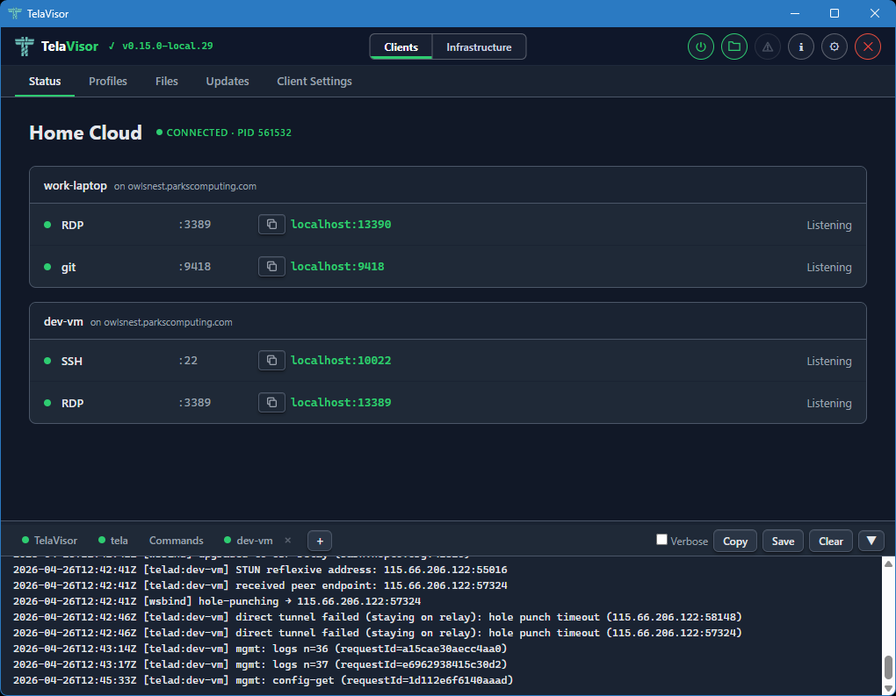
The log panel remembers which dynamic tabs were open between sessions. Tabs you open via View Logs (in the Hubs or Agents tab) or via the attach popover are saved to the TelaVisor settings file and restored on the next launch. This makes the log panel a persistent operator dashboard rather than a transient buffer: the hubs and agents you care about stay attached across restarts.
Application Settings
The Application Settings dialog is opened from the gear icon in the title bar. A toolbar at the top of the dialog provides Apply, Apply & Close, and Cancel buttons. Apply and Apply & Close are disabled until at least one setting changes.

The settings are organized into sections.
Connection
- Auto-connect on launch. When checked, TelaVisor automatically connects using the default profile when the application starts.
- Reconnect on drop. When checked, TelaVisor attempts to reconnect
automatically if the connection drops unexpectedly. The reconnect
logic uses the same backoff schedule as the
telaCLI. - Confirm disconnect. When checked, TelaVisor shows a confirmation prompt before disconnecting or quitting while connected.
Appearance
- Theme. Light, Dark, or System (follows the operating system preference). The change takes effect immediately when you click Apply.
Window
- Minimize to tray on close. When checked, closing the window hides TelaVisor to the system tray instead of exiting. The application remains running in the background and can be restored by clicking the tray icon. Without this setting, closing the window quits the application.
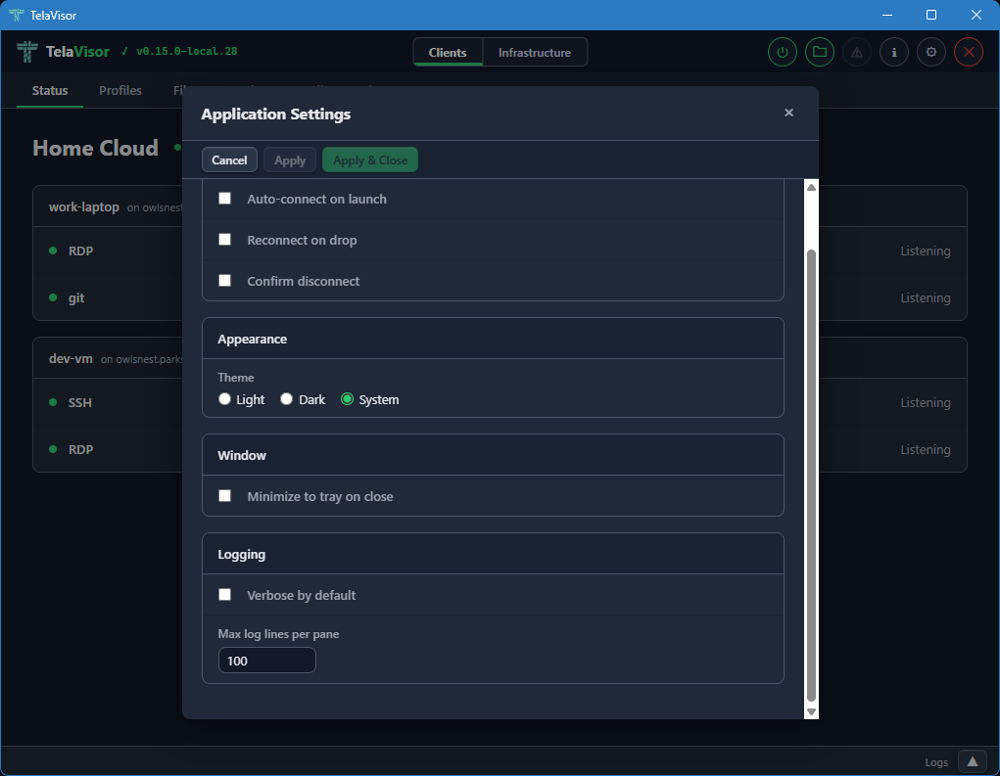
Logging
- Verbose by default. When checked, the
telaprocess is started with verbose logging on every connection. Useful for diagnostic builds. - Max log lines per pane. Limits the number of lines kept in each log tab in the Log panel. The default is 5000. Older lines are evicted as new ones arrive.
About dialog
The About dialog is opened by clicking the TelaVisor title in the
top-left corner of the title bar, or by clicking the information icon
in the title bar. It shows version numbers for both TelaVisor and the
tela CLI, project links, license information, dependency credits, and
the path to the CLI binary.
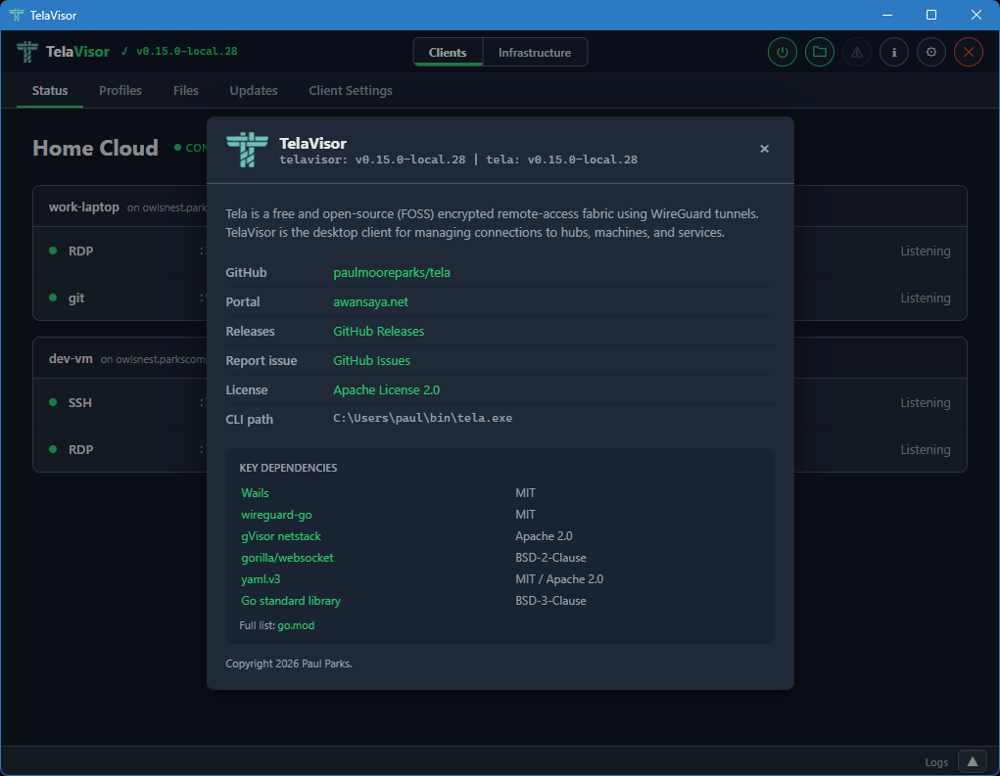
The dialog is the canonical place to confirm what version of TelaVisor
and tela you are running, and which channels they are configured to
follow. Use it when filing bug reports.
Update indicator
When an update is available for any of the binaries TelaVisor manages, an orange warning icon appears in the title bar. Clicking the icon opens an update dialog that shows current and latest versions for each binary, with per-binary Update and Install buttons.
The update dialog is the same workflow as the Installed Tools table on the Updates tab, exposed as a one-click affordance from the title bar so you do not have to navigate to find it. The dialog also has Remind Later (hides the indicator until the next restart) and Skip This Version (hides the indicator until a newer version is released) options.
If TelaVisor was installed via a system package manager (winget, Chocolatey, apt, brew), the self-update mechanism is disabled. Use the package manager to update instead. The update indicator will not appear in this case.
Connection status icon
The power button in the title bar indicates the current connection state at a glance:
- Grey. Disconnected.
- Amber, pulsing. Connecting or disconnecting.
- Green. Connected.
You can click the button at any time from any tab to toggle the connection. When connected, clicking it disconnects. When disconnected, clicking it connects using the current profile.
System tray
When Minimize to tray on close is enabled in Application Settings, closing the window hides TelaVisor to the system tray (the notification area) instead of quitting. The application remains running and the tunnel stays up.
You can left-click or double-click the tray icon to show the window again. Right-clicking the tray icon opens a small menu with Show and Quit options. Quit exits the application and tears down the tunnel.
The tray feature is useful for keeping a long-running tunnel out of the way without committing to installing a system service.
How TelaVisor works with tela
TelaVisor does not implement WireGuard, gVisor, the hub protocol, the
agent protocol, or any of the other parts of the Tela fabric directly.
It is a control surface around the tela command-line process. The
flow of a connection is:
- TelaVisor writes a profile YAML file with your selected hubs, machines, and services. This is the same file format documented in REFERENCE.md.
- TelaVisor runs
tela connect -profile <path>as a child process. - The
telaprocess opens a local control API on a random localhost port with a random one-time bearer token. The token is passed to TelaVisor via a private channel (an environment variable on the child process) so other processes on the same machine cannot guess it. - TelaVisor connects to the control API's WebSocket endpoint to
receive real-time events:
service_bound,tunnel_activity,connection_state. These are the events that drive the Status tab updates. - The
telaprocess output streams to the tela tab in the log panel through the same control API. - When you click Disconnect, TelaVisor signals the
telaprocess to shut down gracefully. The process closes the WireGuard tunnels, releases the local listeners, and exits.
The profile YAML that TelaVisor writes is the same format that the
tela CLI consumes. Profiles are interchangeable between the two: a
profile created in TelaVisor works at the command line, and a profile
written by hand for the command line works in TelaVisor.
For administration features (Hubs, Agents, Remotes, Credentials),
TelaVisor talks to the hubs directly over their HTTPS APIs using the
credentials in the local credential file. There is no tela child
process involved in those requests; TelaVisor uses the same hub admin
endpoints that the CLI's tela admin family uses.
Profile storage
Profiles are stored in the user's application data directory:
| Platform | Path |
|---|---|
| Windows | %APPDATA%\tela\profiles\ |
| Linux | ~/.tela/profiles/ |
| macOS | ~/.tela/profiles/ |
Each profile is a single YAML file. The file name (minus the .yaml
extension) is the profile name. You can edit profile files by hand
with any text editor; TelaVisor reloads them on the next time it
opens the profile.
The default profile, used at startup and by the system service, is configured in Client Settings.
Configuration
TelaVisor's own settings are stored in telavisor-settings.yaml in
the same Tela configuration directory as the credential file. Window
position and size are saved automatically on close and restored on the
next launch. All other settings (theme, default profile, release
channel, log lines, attached log tabs) take effect when you click
Apply or Apply & Close in the Application Settings dialog and
persist across restarts.
Building from source
TelaVisor requires Wails v2 and its prerequisites: Go 1.25 or newer, Node.js, and the platform WebView runtime (WebView2 on Windows, webkit2gtk on Linux, the system WebKit on macOS).
cd cmd/telagui
wails build
The output binary is in cmd/telagui/build/bin/.
For development with live reload:
cd cmd/telagui
wails dev
Note that the JavaScript, HTML, and CSS frontend is bundled into the Go
binary at build time, not at runtime, so editing the frontend requires
a wails build to take effect.